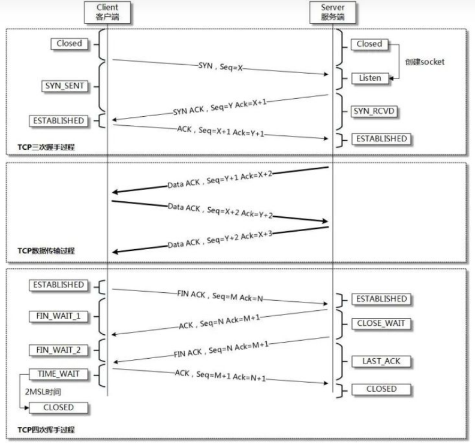

Linux内核参数优化小结（持续更新）
主要汇总了一些常用的Linux内核优化参数。
为了持续生效直接修改文件/etc/sysctl.conf。一般采用sysctl -a再过滤出相关参数，修改文件后sysctl -p立即生效。
比较常见的是根据服务器性能增大文件句柄限制，包括系统层面，用户层面和进程层面的限制。防火墙、路由和其他需要做网络层转发的需要开启允许IP转发的参数，Keepalived备用节点需要修改允许bind本机没有的IP。
系统级别资源限制/etc/security/limits.conf。分为软限制和硬限制：
- 软限制(soft limit):内核实际执行的限制,任何进程都可以将软限制设置为任意小于或等于对进程限制的硬限制的值、最大线程数(noproc)和文件数(nofile)。
- 硬限制(hard limit):可以在任何时候任何进程中设置,但硬限制只能由root修改
服务器通用优化
Linux默认对于系统和进程有较严格的资源限制，无法满足服务器的需求。可用ulimit -a查看进程各项限制。
最大打开文件数
修改**/etc/sysctl.conf**
fs.file-max
系统级别最大打开文件数
fs.nr_open
进程最大打开文件数
修改**/etc/security/limits.conf**
* **soft nofile **
* **hard nofile **
用户最大打开文件数。可指定用户，*为所有用户
进程限制
修改**/etc/security/limits.conf**
kernel.pid_max
最大打开进程数
* soft nproc 65535
* hard nproc 65535
用户达到该限制后，无法创建新的进程。
消息队列设置
修改**/etc/security/limits.conf**
kernel.msgmnb
消息队列的最大字节数
kernel.msgmni
最多允许创建多少个消息队列
kernel.msgmax
消息队列单条数据最大的长度
网络连接设置
net.core.netdev_max_backlog
每个网络接口接收数据包的速率比内核处理这些包的速率快时，允许送到队列的数据包的最大数目。
net.core.somaxconn
每个端口最大监听队列
ip_conntrack_max
系统支持的最大ipv4连接数，默认值与内存有关
k8s环境要求
net.bridge.bridge-nf-call-iptables: 1
net.bridge.bridge-nf-call-ip6tables: 1
web服务TCP优化
基本思路是：增加最大接受的访问数，适当减少等待时间和重试次数，适当减少非活动连接数及时断开与关闭但没有发送Fin的客户端连接，适当减少timewait连接并设置好回收和连接复用。

net.ipv4.tcp_fin_timeout
表示套接字有本端要求关闭，这个参数决定了它保持在FIN_WAIT_2状态的时间，默认值是60s
net.ipv4.tcp_max_tw_buckets
表示系统同时保持TIME_WAIT套接字的最大数量，如果超过这个数值，TIME_WAIT套接字将立刻被清除并打印警告信息。也不能设置得太低，否则客户端再次通信需要建立新的连接。
net.ipv4.tcp_tw_reuse
timewait状态socket复用
net.ipv4.tcp_tw_recycle
置为1后TIME_WAIT不用再等待2MSL的时间进行释放连接
net.ipv4.tcp_keepalive_time
TCP发送Keepalive消息（检测客户端连接健康）的频度。默认是2小时，建议改为10分钟
net.ipv4.ip_local_port_range
允许打开的端口范围，影响最大并发连接数
net.ipv4.tcp_max_syn_backlog
该参数为服务器端用于记录那些尚未收到客户端确认信息的连接请求最大值。默认为128，建议加大队列的长度
net.ipv4.tcp_syn_retries
表示在内核放弃建立连接之前发送SYN包的数量，默认值是6次
net.ipv4.tcp_synack_retries
参数值决定了内核放弃连接之前发送SYN+ACK包的数量，默认值为5
net.ipv4.tcp_max_orphans
系统所能处理不属于任何进程的TCP的socket最大数量
net.ipv4.tcp_syncookies = 1
防止syn flood恶意半连接攻击
net.core.somaxconn
每个端口最大监听队列，影响最大并发TCP连接数，默认挂起最大数量128较小
net.core.netdev_max_backlog
表示当每个网络接口接收数据包的速率比内核处理这些包的速率快时，允许发送到内存队列的数据包最大数
net.core.wmem_default
该参数指定了发送套接字缓冲区大小的缺省值(以字节为单位)
**net.core.rmem_default **
该参数指定了接收套接字缓冲区大小的缺省值(以字节为单位)
**net.core.rmem_max **
该参数指定了接收套接字缓冲区大小的最大值(以字节为单位)
net.core.wmem_max
该参数指定了发送套接字缓冲区大小的最大值(以字节为单位)
本博客所有文章除特别声明外，均采用 CC BY-SA 4.0 协议 ，转载请注明出处！